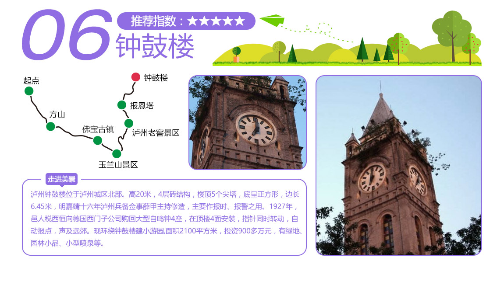
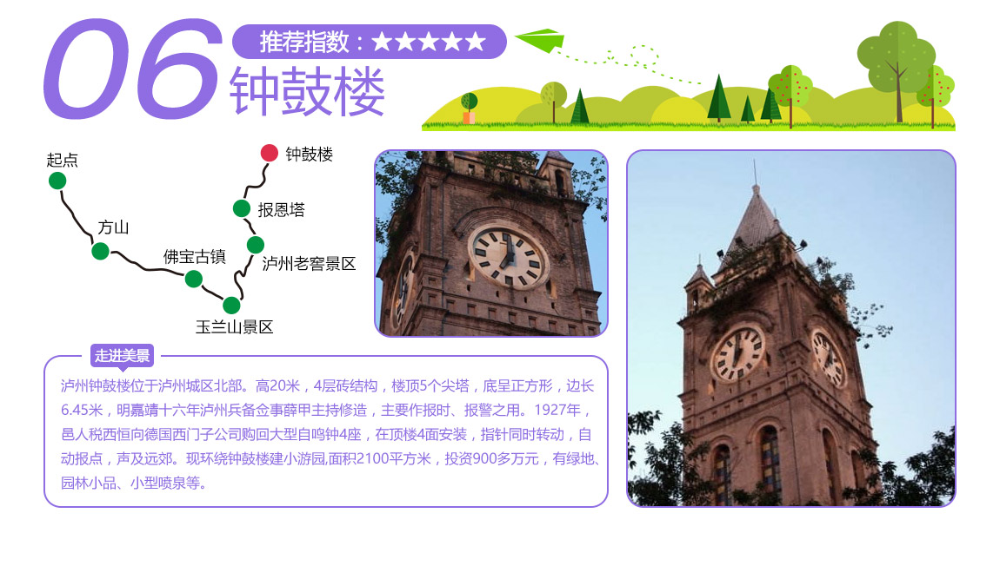
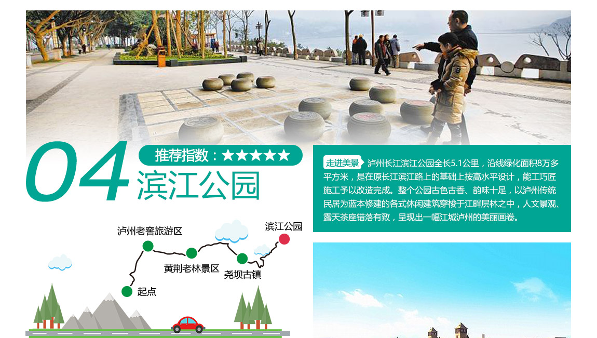
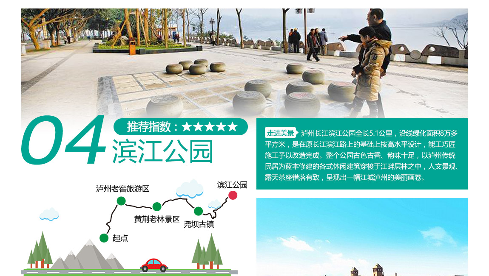

 

泸州三日游线路推荐
文章摘要：未知
D1:
早晨前往城区国窖广场，参观【国宝窖池】，依次游览【酒史浮雕图】、【龙泉井】、【1573纯手工酿制生产现场】、【酒史陈列室】，品正宗1573原浆酒，在展销区可根据需要选购泸州老窖全系列正宗白酒。然后前往【张坝桂圆林】沿长江延绵十余里，是中国北回归线上最大、最古老的桂圆林区，包括百年桂圆老树在内的各种珍贵树种共5万余株。然后前往【尧坝古镇】享誉川黔的文化名镇、影视基地，保留较为古老的生活方式，于丹曾评价“尧坝古镇是一座活着的古镇”。国庆期间，尧坝驿将举办丰富多彩的旅游活动，都不容错过。游览后前往【黄荆老林】晚餐并入住。
D2：早餐后游览【黄荆老林】森林覆盖率高达98%，地球同纬度保存最为完好的亚热带常绿阔叶林区，这里有【八节洞瀑布群】、【千米长滩】等景观，是休闲度假的好去处。午餐后前往【大寨富民新村】这里各种菊花竞相开放，是赏菊的最佳时节。然后前往【大黑洞】，大黑洞拥有喀斯特地貌奇观，森林、草场等自然景观，以及浓郁的苗族人文风情。游览后前往【坝上桃花坞】晚餐入住。
D3：上午游览【坝上桃花坞】坝上桃花坞位于叙永县江门镇境内，总占地面积约600亩，与纳溪区黄龙湖依山伴水，以“瘦西湖”园林格局为设计蓝本，由“亭、台、楼、坊、湖、林”组成，川南唯一的古典山水园林景观，现实版的“桃花源”。午餐后前往【花田酒地】可以体验【高台蹦极】和【幸福久久七彩玻璃栈道】的惊喜与刺激，游览后返程。
2.市区——护国战争纪念馆——鱼凫古街——鸡鸣三省大峡谷——古蔺县城——太平古镇——古郎洞——二郎镇——美酒河风景区——返程
D1：早晨从市区出发前往【护国战争纪念馆】建筑群古朴而富有川南民居特色，曾是护国战争棉花坡战役朱德的作战指挥部。然后前往【鱼凫古街】午餐。午餐后前往【鸡鸣三省大峡谷】云贵川三省交界地带，这里山峦环绕、深谷林幽，自然景观极其优美。游览后前往古蔺县城晚餐并入住。
D2：早餐后前往【太平古镇】游览，川南山地民居建筑精华，这里有很多红色革命遗址和遗迹，让心灵受到红色洗礼。参观后前往【古郎洞】位于古蔺东新镇，是目前川渝地区地质遗迹形态最完整，洞穴景观品类最丰富的喀斯特洞穴。游览后前往二郎镇入住。
D3：早餐后前往【美酒河风景区】核心景点是赤水河南岸吴公岩上，镶刻着著名新闻学者、中将邵华泽书写的“美酒河”三个气势恢弘巨形大字，雄伟、神奇、美丽、险峻。游览后返程。
国庆期间泸州旅游线路推荐
文章摘要：国庆期间泸州旅游线路推荐
一日游
1.泸州老窖旅游区（国宝窖池）——龙洄酒庄——花田酒地——返程
早晨前往城区国窖广场，参观【国宝窖池】游览中国第一窖——国宝窖池，依次游览【酒史浮雕图】、【龙泉井】、【1573纯手工酿制生产现场】、【酒史陈列室】，在【“天下第一酒道场”】观酒道表演、品正宗1573原浆酒，在展销区可根据需要选购泸州老窖全系列正宗白酒。参观后前往【龙洄酒庄】中国白酒1号庄园，集种植、酿造、销售为一体，期间可以体验白酒DIY的魅力和乐趣。午餐后前往【花田酒地】体验【1573米彩色玻璃栈道】和【高台蹦极】的惊喜与刺激。游览后返程。
2.市区——尧坝古镇（尧坝驿）——张坝桂圆林——返程
早晨从市区出发，前往【尧坝古镇】享誉川黔的文化名镇、影视基地，保留较为古老的生活方式，于丹曾评价“尧坝古镇是一座活着的古镇”。午餐后前往【张坝桂圆林】沿长江延绵十余里，是中国北回归线上最大、最古老的桂圆林区，包括百年桂圆老树在内的各种珍贵树种共5万余株，游览后返程。
二日游
1.市区——国宝窖池——太平古镇——古郎洞——二郎镇美酒河风景区——返程
D1：早晨前往城区国窖广场，参观【国宝窖池】游览中国第一窖——国宝窖池，依次游览【酒史浮雕图】、【龙泉井】、【1573纯手工酿制生产现场】、【酒史陈列室】，在【“天下第一酒道场”】观酒道表演、品正宗1573原浆酒，在展销区可根据需要选购泸州老窖全系列正宗白酒。然后前往【太平古镇】川南山地民居建筑精华，参观【红军长征四渡赤水纪念馆】等诸多红色革命遗址和遗迹，让心灵受到再次红色洗礼。在太平古镇入住。
D2：前往【古郎洞】位于古蔺东新镇，是目前川渝地区地质遗迹形态最完整，洞穴景观品类最丰富的喀斯特洞穴。参观后前往【美酒河风景区】核心景点，赤水河南岸吴公岩。镶刻着著名新闻学者、中将邵华泽书写的“美酒河”三个气势恢弘巨形大字，这里山势险峻、河谷深幽，孕育了茅台、郎酒、习酒等世界知名酱酒。游览后返程。
2.市区——大黑洞——古蔺大寨富民新村——黄荆老林——返程
D1：从市区出发前往【大黑洞】拥有喀斯特地貌奇观，森林、草场等自然景观，以及苗族人文风情。参观后前往【大寨富民新村】各种菊花竞相开放，是赏菊的最佳时节，参观后入住【黄荆老林】。
D2：早餐后游览【黄荆老林】森林覆盖率高达98%，地球同纬度保存最为完好的亚热带常绿阔叶林区，这里有【八节洞瀑布群】、【千米长滩】等景观，是旅游度假不错的地方。